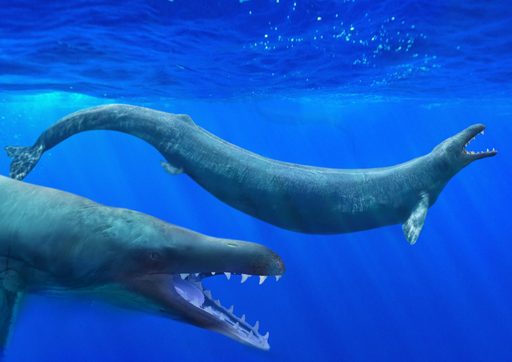
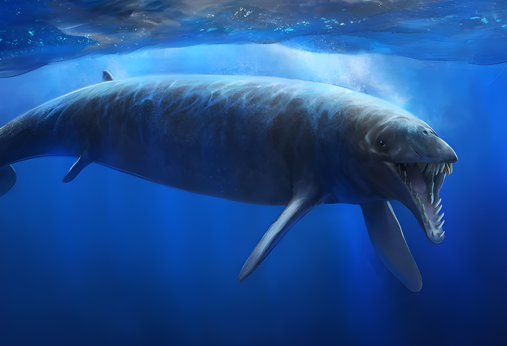
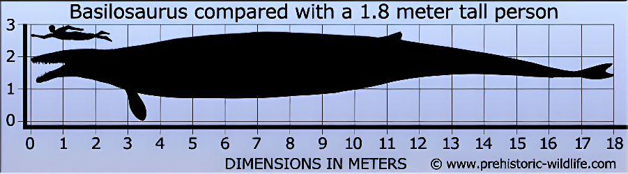
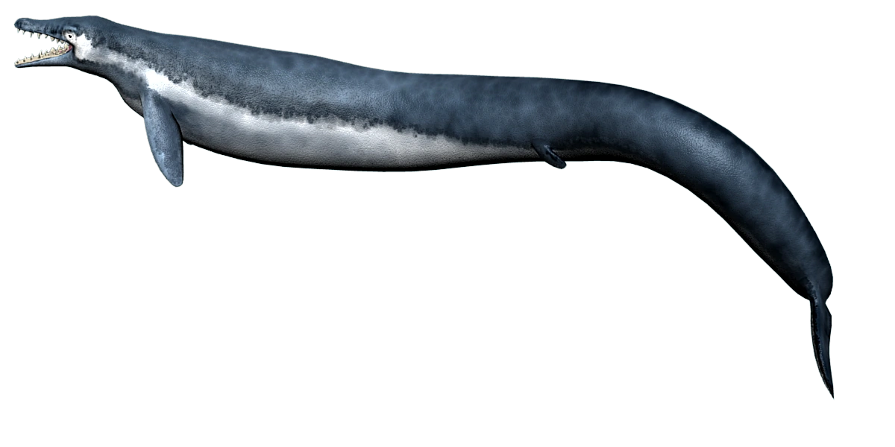
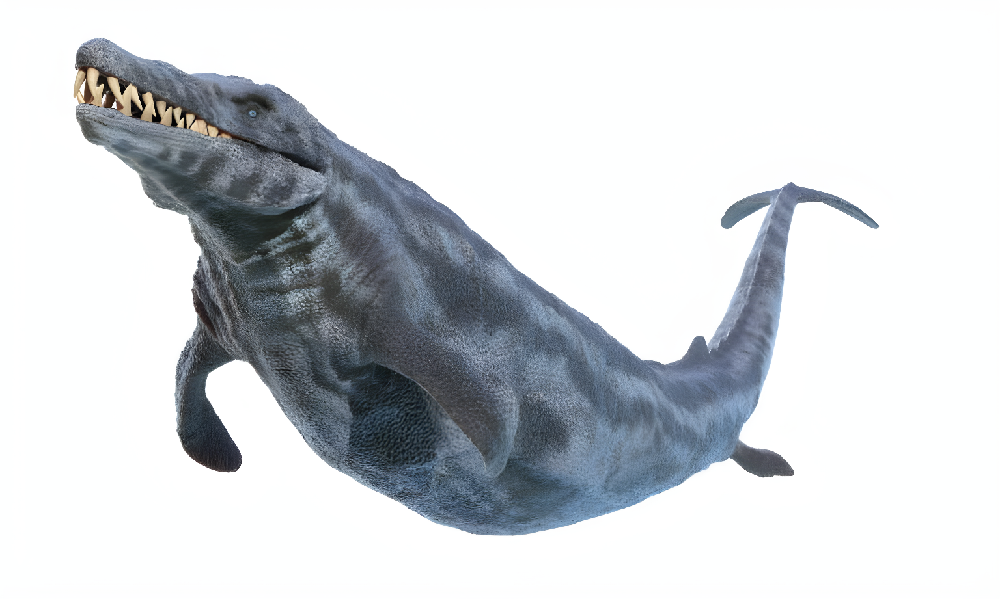
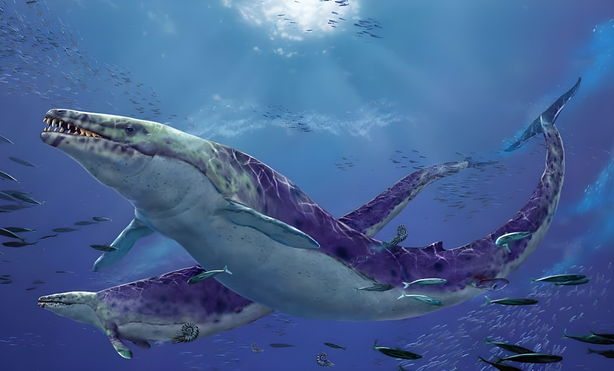
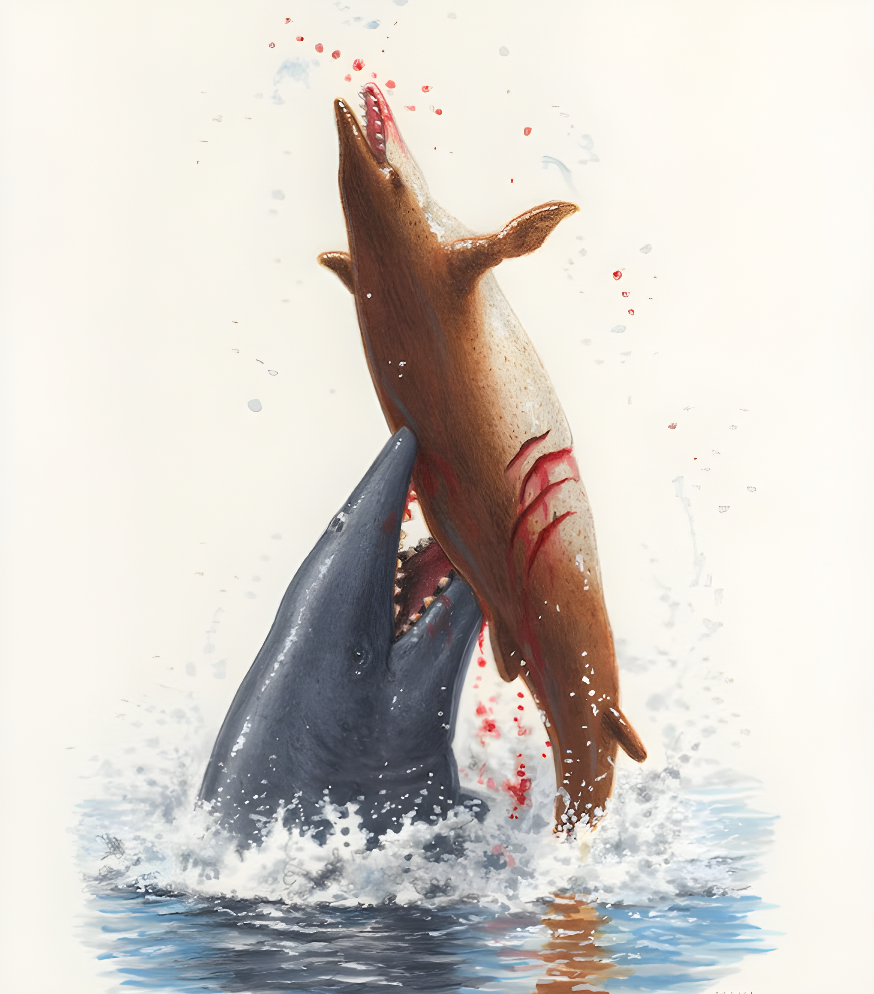
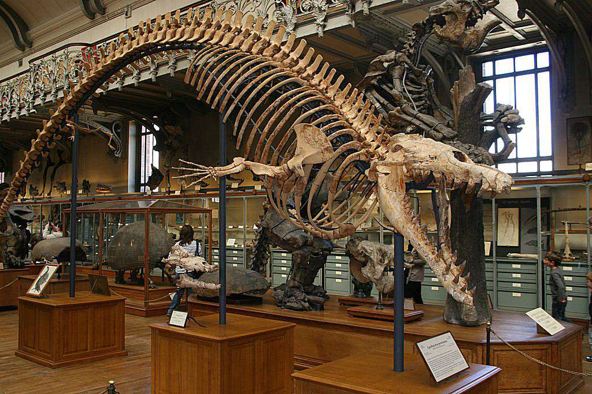
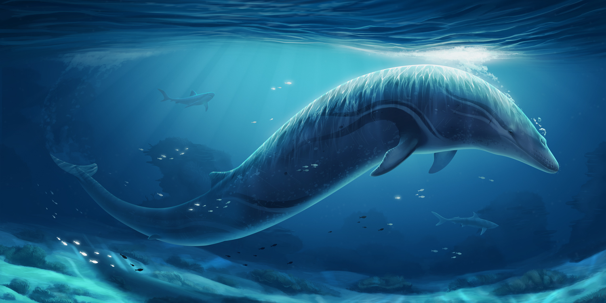

Basilosaurus
Cá Voi Tiền Sử kỷ Cổ Cận
Tổng quan
Kỷ
Paleogen
Họ
Basilosauridae
Chi
Basilosaurus
Dài
18.5 m
Nặng
10 tấn
Thức ăn


Basilosaurus hay Zeuglodon, là một loài cá voi thời tiền sử nổi tiếng, từng thống trị biển cả vào cuối thế Thủy Tân trong kỷ Paleogen. Trên thực tế, Basilosaurus là loại cá voi thời tiền sử đầu tiên từng được phát hiện. Tuy nhiên, cá voi hiện đại không phải là hậu duệ của Basilosaurus.
Nguồn: wikipedia.org
Phân bố
Khu vực Bắc Mỹ, Bắc Phi và Nam Á
Thông tin thêm về Basilosaurus
Kỷ nguyên và phân bố
Basilosaurus từng sống sau khi khủng long tuyệt chủng và động vật có vú bắt đầu phát triển với số lượng lớn hơn, khoảng từ 40 đến 34 triệu năm trước trong thế Eocen muộn thuộc kỷ Paleogen.
Những động vật biển này có khả năng đã sống ở Đại dương Tethys thời tiền sử. Khi các vùng đất thay đổi và di chuyển, khu vực này trở thành Ấn Độ Dương và Đại Tây Dương ngày nay. Sự hiện diện của các hóa thạch Basilosaurus ở Ai Cập, Bắc Phi, Jordan và Pakistan cho thấy chúng đã phổ biến ở khu vực này khi nó ở dưới nước. Hóa thạch Basilosaurus cũng phổ biến ở Nam Mỹ, đặc biệt là ở Alabama, Louisiana và Mississippi.
Tên khoa học
Do ngày trước, người ta đã lầm tưởng chúng là một loài bò sát biển nên đã đặt tên cho chúng có hậu tố "saurus" (thằn lằn, bò sát) cùng tiền tố "basilo" (vua) vì thân hình khổng lồ của chúng, cho nên chúng từng có biệt danh là "Vua bò sát", sau này khi nhận ra sai lầm của mình, các nhà cổ sinh vật học đã đổi tên chúng thành Zeuglodon nhưng do cụm từ "Basilosaurus" đã đc đăng ký chính thức cho loài này rồi nên cụm từ "Zeuglodon" chỉ là 1 tên khác của loài cá voi này chứ ko phải là thay thế hoàn toàn tên gọi ban đầu.
Kích thước
Basilosaurus được coi là loài động vật lớn nhất đã sống trong thời đại của chúng. Một con Basilosaurus trưởng thành có chiều dài trung bình từ 12 đến 20 mét và nặng khoảng 10 đến 15 tấn.
Ngoại hình
Cá voi Basilosaurus có kiểu dáng đẹp và dài hơn nhiều loài cá voi hiện đại và thân hình thon trông gần giống như những con lươn rất lớn. Không giống như loài cá voi ngày nay, Basilosaurus có vây giống mái chèo tương tự như vây của loài hải cẩu và chiếc đuôi dài.
Phần quai hàm dài cùng với bộ răng sắc nhọn có lực cắn mạnh chứ không phải tấm sừng hàm như nhiều loài cá voi hiện đại cùng kích thước với chúng. Đặc điểm nổi bật nhất của Basilosaurus là người chúng rất thanh mảnh. Ngược lại với các loài động vật biển khác, Basilosaurus chuyển động linh hoạt giống như lươn ngày nay.
Chế độ ăn và săn mồi
Basilosaurus có răng và răng của chúng có dấu hiệu mòn, điều này có thể cho các nhà khoa học biết nhiều điều về chế độ ăn uống của Basilosaurus, có thể chúng đã nhai thức ăn trước khi ăn. Có lẽ chúng đã phải ăn rất nhiều để duy trì kích thước to lớn của mình. May mắn thay, nguồn thức ăn ở đại dương lúc đó không thiếu cho những thợ săn này.
Do cấu tạo các cơ trong cơ thể, chúng không thể lặn sâu và bơi trong thời gian dài nên chúng chỉ săn mồi ở khu vực gần bề mặt nước. Cá mập và voi thời tiền sử mạo hiểm gần mặt nước cũng đã trở thành con mồi của Basilosaurus.
Khám phá
Các dấu tích hóa thạch đầu tiên của chúng thuộc phân loài B. Cetoides lần đầu tiên đc phát hiện ở Louisiana và Alabama miền nam Hoa Kỳ vào năm 1906. Các nhà nghiên cứu đã mang đốt sống và răng đến Vương quốc Anh để nhận dạng, so sánh với các mẫu vật tương tự khác và nhận ra rằng con vật là động vật có vú sống ở đại dương.
Cho đến đầu tháng 6-2015, các nhà khảo cổ học đã phát hiện bộ hóa thạch phần đầu của loài cá voi này tại Thung lũng Wadi Al-Hitan ở Wadi al-Hitan, Ai Cập. Khối đá sa thạch khổng lồ này chứa rất nhiều hóa thạch và bộ xương cá voi nên nó được gọi là “Thung lũng cá voi”. Bao gồm trong này là mẫu vật Basilosaurus. Một phát hiện quan trọng vào năm 2016 về bộ xương Basilosaurus hoàn chỉnh tại Wadi El Hitan đã dạy cho các nhà nghiên cứu rất nhiều điều về cấu trúc và đời sống của nó. Bộ xương của con mồi cũng được tìm thấy trong dạ dày, bao gồm Dorudon (một loài động vật biển có vú cổ đại tương tự như cá heo) và bộ xương cá.
Văn hóa đại chúng
Basilosaurus là hóa thạch của bang Alabama và Mississippi. Trước khi người ta biết nhiều về những loài động vật cổ đại này, nhiều cộng đồng ở Nam Mỹ đã sử dụng các đốt sống lớn của chúng để làm đồ nội thất vào thế kỷ 19. Sinh vật này thậm chí còn được nhắc đến trong cuốn tiểu thuyết kinh điển Moby Dick của Herman Melville.
